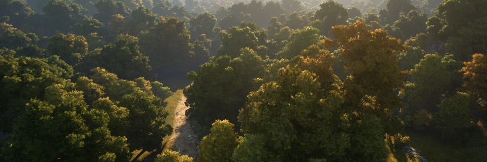
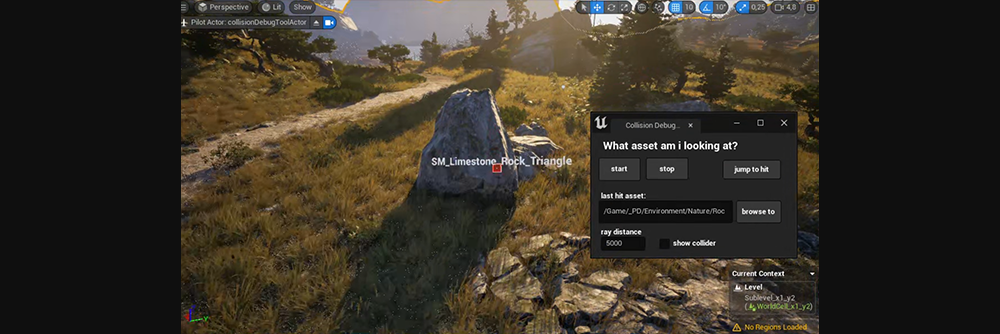

Pax Dei
Procedural world generation - Foliage & environment asset scattering for different biomes
Procedural world generation - Foliage & environment asset scattering for different biomes


- dynamic bridge placement

PCG
Dynamic placement of small actors using splines, polygons, etc.
Dynamic placement of small actors using splines, polygons, etc.


Location based color variation


Unreal 5 developer tools
- world coordinates utility tool
- world coordinates utility tool
- Asset identification tool

- hlods
- blueprints + python
user-friendly materials
- hierarchical foliage materials
- root deformation
- blueprints + python
user-friendly materials
- hierarchical foliage materials
- root deformation

Houdini utility tools
- p4 checkout, etc on shelf
Foliage impostors with accurate lighting